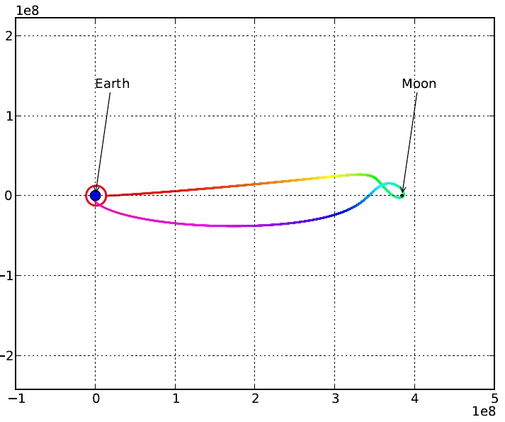

This chapter presents three examples to which inspyred can be applied.
The Rastrigin function is a well-known benchmark in the optimization literature. It is defined as follows:
Minimize
for \(x_i \in [-5.12, 5.12]\).
Since this problem is defined on a set of continuous-valued variables, using an evolution strategy as our optimizer seems appropriate. However, as always, we’ll need to first create the generator and the evaluator for the candidate solutions. First, the generator...
from random import Random
from time import time
from math import cos
from math import pi
from inspyred import ec
from inspyred.ec import terminators
def generate_rastrigin(random, args):
size = args.get('num_inputs', 10)
return [random.uniform(-5.12, 5.12) for i in range(size)]
First, we import all the necessary libraries. random and time are needed for the random number generation; math is needed for the evaluation function; and inspyred is, of course, needed for the evolutionary computation.
This function must take the random number generator object along with the keyword arguments. Notice that we can use the args variable to pass anything we like to our functions. There is nothing special about the num_inputs key. But, as we’ll see, we can pass in that value as a keyword argument to the evolve method of our evolution strategy.
This code is pretty straightforward. We’re simply generating a list of num_inputs uniform random values between -5.12 and 5.12. If num_inputs has not been specified, then we will default to generating 10 values.
And now we can tackle the evaluator...
def evaluate_rastrigin(candidates, args):
fitness = []
for cs in candidates:
fit = 10 * len(cs) + sum([((x - 1)**2 - 10 * cos(2 * pi * (x - 1))) for x in cs])
fitness.append(fit)
return fitness
This function takes an iterable object containing the candidates along with the keyword arguments. The function should perform the evaluation of each of the candidates and return an iterable object containing each fitness value in the same order as the candidates [1]. The Rastrigin problem is one of minimization, so we’ll need to tell the evolution strategy that we are minimizing (by using maximize=False in the call to evolve).
Now that we have decided upon our generator and evaluator, we can create the EC. In this case since our problem is real-coded, we’ll choose a evolution strategy (ES) [2]. The default for an ES is to select the entire population, use each to produce a child via Gaussian mutation, and then use “plus” replacement.
rand = Random()
rand.seed(int(time()))
es = ec.ES(rand)
es.terminator = terminators.evaluation_termination
final_pop = es.evolve(generator=generate_rastrigin,
evaluator=evaluate_rastrigin,
pop_size=100,
maximize=False,
bounder=ec.Bounder(-5.12, 5.12),
max_evaluations=20000,
mutation_rate=0.25,
num_inputs=3)
# Sort and print the best individual, who will be at index 0.
final_pop.sort(reverse=True)
print(final_pop[0])
$ python rastrigin.py
[1.0591544744884256, -0.06931594194249761, 2.014420132288964, 2.4373871664313254, 0.9287429640850096, 1.4371661116043493] : 3.83332404535
As can be seen, we first create our random number generator object, seeding it with the current system time. Then we construct our ES, specifying a terminator (that stops after a given number of function evaluations). Finally, we call the evolve method of the ES. To this method, we pass the generator, evaluator, the population size, a flag to denote that we’re minimizing in this problem (which defaults to maximize=True if unspecified), a bounding function to use for candidate solutions, and a set of keyword arguments that will be needed by one or more of the functions involved. For instance, we pass num_inputs to be used by our generator. Likewise, max_evaluations will be used by our terminator.
The script outputs the best individual in the final generation, which will be located at index 0 after the final population is sorted. Since the random number generator was seeded with the current time, your particular output will be different when running this script from that presented here. You can download the full example to run it yourself.
Footnotes
| [1] | The evaluator was designed to evaluate all candidates, rather than a single candidate (with iteration happening inside the evolutionary computation), because this allows more complex evaluation functions that make use of the current set of individuals. Of course, such a function would also rely heavily on the choice of selector, as well. If no such elaborate mechanism is needed, then the decorator @inspyred.ec.evaluators.evaluator can be used on an evaluation function that operates on a single candidate. See the reference documentation for more details. |
| [2] | We can also certainly create real-coded genetic algorithms, among many other choices for our EC. However, for this discussion we are attempting to use the canonical versions to which most people would be accustomed. |
In this example, we will attempt to create a polygon of n vertices that has maximal area. We’ll also create a custom observer that allows us to display the polygon as it evolves.
from random import Random
from time import time
from time import sleep
import inspyred
from Tkinter import *
import itertools
def generate_polygon(random, args):
size = args.get('num_vertices', 6)
return [(random.uniform(-1, 1), random.uniform(-1, 1)) for i in range(size)]
Once again, we import the necessary libraries. In this case, we’ll also need to tailor elements of the EC, as well as provide graphical output.
After the libraries have been imported, we define our generator function. It looks for the keyword argument num_vertices, and it creates a list of num_vertices ordered pairs (tuples) where each coordinate is in the range [-1, 1].
def segments(p):
return zip(p, p[1:] + [p[0]])
def area(p):
return 0.5 * abs(sum([x0*y1 - x1*y0 for ((x0, y0), (x1, y1)) in segments(p)]))
def evaluate_polygon(candidates, args):
fitness = []
for cs in candidates:
fit = area(cs)
fitness.append(fit)
return fitness
In order to evaluate the polygon, we need to calculate its area. The segments and area functions do this for us. (In case it’s not clear from the code, the segments function turns a list of coordinate pairs into a list of pairs of adjacent neighbors. For instance, [(1, 2), (3, 4), (5, 6)] would return [((1, 2), (3, 4)), ((3, 4), (5, 6)), ((5, 6), (1, 2))].) Therefore, the evaluate_polygon function simply needs to assign the fitness to be the value returned as the area.
def bound_polygon(candidate, args):
for i, c in enumerate(candidate):
x = max(min(c[0], 1), -1)
y = max(min(c[1], 1), -1)
candidate[i] = (x, y)
return candidate
bound_polygon.lower_bound = itertools.repeat(-1)
bound_polygon.upper_bound = itertools.repeat(1)
Because our representation is a bit non-standard (a list of tuples), we need to create a bounding function that the EC can use to bound potential candidate solutions. Here, the bounding function is simple enough. It just make sure that each element of each tuple lies in the range [-1, 1]. The lower_bound and upper_bound attributes are added to the function so that the mutate_polygon function can make use of them without being hard-coded. While this is not strictly necessary, it does mimic the behavior of the Bounder callable class provided by inspyred.
def polygon_observer(population, num_generations, num_evaluations, args):
try:
canvas = args['canvas']
except KeyError:
canvas = Canvas(Tk(), bg='white', height=400, width=400)
args['canvas'] = canvas
# Get the best polygon in the population.
poly = population[0].candidate
coords = [(100*x + 200, -100*y + 200) for (x, y) in poly]
old_polys = canvas.find_withtag('poly')
for p in old_polys:
canvas.delete(p)
old_rects = canvas.find_withtag('rect')
for r in old_rects:
canvas.delete(r)
old_verts = canvas.find_withtag('vert')
for v in old_verts:
canvas.delete(v)
canvas.create_rectangle(100, 100, 300, 300, fill='', outline='yellow', width=6, tags='rect')
canvas.create_polygon(coords, fill='', outline='black', width=2, tags='poly')
vert_radius = 3
for (x, y) in coords:
canvas.create_oval(x-vert_radius, y-vert_radius, x+vert_radius, y+vert_radius, fill='blue', tags='vert')
canvas.pack()
canvas.update()
print('{0} evaluations'.format(num_evaluations))
sleep(0.05)
Since we are evolving a two-dimensional shape, it makes sense to use a graphical approach to observing the current best polygon during each iteration. The polygon_observer accomplishes this by drawing the best polygon in the population to a Tk canvas. Notice that the canvas is passed in via the keyword arguments parameter args.
For this task, we’ll create a custom evolutionary computation by selecting the operators to be used. First, we will need to create a custom mutation operator since none of the pre-defined operators deal particularly well with a list of tuples.
def mutate_polygon(random, candidates, args):
mut_rate = args.setdefault('mutation_rate', 0.1)
bounder = args['_ec'].bounder
for i, cs in enumerate(candidates):
for j, (c, lo, hi) in enumerate(zip(cs, bounder.lower_bound, bounder.upper_bound)):
if random.random() < mut_rate:
x = c[0] + random.gauss(0, 1) * (hi - lo)
y = c[1] + random.gauss(0, 1) * (hi - lo)
candidates[i][j] = (x, y)
candidates[i] = bounder(candidates[i], args)
return candidates
Notice that this is essentially a Gaussian mutation on each coordinate of each tuple. Now we can create our custom EC.
rand = Random()
rand.seed(int(time()))
my_ec = inspyred.ec.EvolutionaryComputation(rand)
my_ec.selector = inspyred.ec.selectors.tournament_selection
my_ec.variator = [inspyred.ec.variators.uniform_crossover, mutate_polygon]
my_ec.replacer = inspyred.ec.replacers.steady_state_replacement
my_ec.observer = polygon_observer
my_ec.terminator = [inspyred.ec.terminators.evaluation_termination, inspyred.ec.terminators.average_fitness_termination]
window = Tk()
window.title('Evolving Polygons')
can = Canvas(window, bg='white', height=400, width=400)
can.pack()
final_pop = my_ec.evolve(generator=generate_polygon,
evaluator=evaluate_polygon,
pop_size=100,
bounder=bound_polygon,
max_evaluations=5000,
num_selected=2,
mutation_rate=0.25,
num_vertices=3,
canvas=can)
# Sort and print the best individual, who will be at index 0.
final_pop.sort(reverse=True)
print('Terminated due to {0}.'.format(my_ec.termination_cause))
print(final_pop[0])
sleep(5)
This EC uses tournament selection, uniform crossover, our custom mutation operator, and steady-state replacement. We also set up the custom observer and create the canvas, which is passed into the evolve method as a keyword argument. You can download the full example to run it yourself.
In this example [3], we will evolve the configuration for a space probe designed to travel around the Moon and return to Earth. The space probe is defined by five parameters: its orbital height, mass, boost velocity (both x and y components), and initial y (vertical from Earth) velocity. The physical problem which we are here using optimization to solve is known as “Gravity Assist” or “Gravity Slingshot” and is used by spacecraft to alter the direction and speed of spacecraft, reducing the need for propellant. It was first propsed by Yuri Kondratyuk and first used by the Soviet space probe Luna 3 in 1959 to take the first pictures of the never-before-seen far side of the moon. The computational power available to the designers of the Luna 3 was much smaller than what is available today. The optimization of the space craft’s trajectory was therefore a very difficult task. The evaluator presented here makes some simplifying assumptions, but demonstrates the general principle of using evolutionary computation to solve an engineering or scientific task.
import os
import math
import pylab
import itertools
from matplotlib import pyplot as plt
from matplotlib.patches import Circle
from random import Random
from time import time
import inspyred
def satellite_generator(random, args):
chromosome = []
bounder = args["_ec"].bounder
# The constraints are as follows:
# orbital satellite boost velocity initial y
# height mass (x, y) velocity
for lo, hi in zip(bounder.lower_bound, bounder.upper_bound):
chromosome.append(random.uniform(lo, hi))
return chromosome
After the libraries have been imported, we define our generator function. It simply pulls the bounder values for each of the five parameters of the satellite and randomly chooses a value between the minimum and maximum.
def pairwise(iterable):
"""s -> (s0,s1), (s1,s2), (s2, s3), ..."""
a, b = itertools.tee(iterable)
next(b, None)
return itertools.izip(a, b)
This function breaks a one-dimensional list into a set of overlapping pairs. This is necessary because the trajectory of the satellite is a set of points, and the total distance traveled is calculated by summing the pairwise distances.
def distance_between(position_a, position_b):
return math.sqrt((position_a[0] - position_b[0])**2 + (position_a[1] - position_b[1])**2)
This function calculates the Euclidean distance between points.
def gravitational_force(position_a, mass_a, position_b, mass_b):
"""Returns the gravitational force between the two bodies a and b."""
distance = distance_between(position_a, position_b)
# Calculate the direction and magnitude of the force.
angle = math.atan2(position_a[1] - position_b[1], position_a[0] - position_b[0])
magnitude = G * mass_a * mass_b / (distance**2)
# Find the x and y components of the force.
# Determine sign based on which one is the larger body.
sign = -1 if mass_b > mass_a else 1
x_force = sign * magnitude * math.cos(angle)
y_force = sign * magnitude * math.sin(angle)
return x_force, y_force
This function calculates the gravitational force between the two given bodies.
def force_on_satellite(position, mass):
"""Returns the total gravitational force acting on the body from the Earth and Moon."""
earth_grav_force = gravitational_force(position, mass, earth_position, earth_mass)
moon_grav_force = gravitational_force(position, mass, moon_position, moon_mass)
F_x = earth_grav_force[0] + moon_grav_force[0]
F_y = earth_grav_force[1] + moon_grav_force[1]
return F_x, F_y
This function calculates the force on the satellite from both the Earth and the Moon.
def acceleration_of_satellite(position, mass):
"""Returns the acceleration based on all forces acting upon the body."""
F_x, F_y = force_on_satellite(position, mass)
return F_x / mass, F_y / mass
This function calculates the acceleration of the satellite due to the forces acting upon it.
def moonshot(orbital_height, satellite_mass, boost_velocity, initial_y_velocity,
time_step=60, max_iterations=5e4, plot_trajectory=False):
fitness = 0.0
distance_from_earth_center = orbital_height + earth_radius
eqb_velocity = math.sqrt(G * earth_mass / distance_from_earth_center)
# Start the simulation.
# Keep up with the positions of the satellite as it moves.
position = [(earth_radius + orbital_height, 0.0)] # The initial position of the satellite.
velocity = [0.0, initial_y_velocity]
time = 0
min_distance_from_moon = distance_between(position[-1], moon_position) - moon_radius
i = 0
keep_simulating = True
rockets_boosted = False
while keep_simulating:
# Calculate the acceleration and corresponding change in velocity.
# (This is effectively the Forward Euler Algorithm.)
acceleration = acceleration_of_satellite(position[-1], satellite_mass)
velocity[0] += acceleration[0] * time_step
velocity[1] += acceleration[1] * time_step
# Start the rocket burn:
# add a boost in the +x direction of 1m/s
# closest point to the moon
if position[-1][1] < -100 and position[-1][0] > distance_from_earth_center-100 and not rockets_boosted:
launch_point = position[-1]
velocity[0] += boost_velocity[0]
velocity[1] += boost_velocity[1]
rockets_boosted = True
# Calculate the new position based on the velocity.
position.append((position[-1][0] + velocity[0] * time_step,
position[-1][1] + velocity[1] * time_step))
time += time_step
if i >= max_iterations:
keep_simulating = False
distance_from_moon_surface = distance_between(position[-1], moon_position) - moon_radius
distance_from_earth_surface = distance_between(position[-1], earth_position) - earth_radius
if distance_from_moon_surface < min_distance_from_moon:
min_distance_from_moon = distance_from_moon_surface
# See if the satellite crashes into the Moon or the Earth, or
# if the satellite gets too far away (radio contact is lost).
if distance_from_moon_surface <= 0:
fitness += 100000 # penalty of 100,000 km if crash on moon
keep_simulating = False
elif distance_from_earth_surface <= 0:
keep_simulating = False
fitness -= 100000 # reward of 100,000 km if land on earth
elif distance_from_earth_surface > 2 * distance_between(earth_position, moon_position):
keep_simulating = False #radio contact lost
i += 1
# Augment the fitness to include the minimum distance (in km)
# that the satellite made it to the Moon (lower without crashing is better).
fitness += min_distance_from_moon / 1000.0
# Augment the fitness to include 1% of the total distance
# traveled by the probe (in km). This means the probe
# should prefer shorter paths.
total_distance = 0
for p, q in pairwise(position):
total_distance += distance_between(p, q)
fitness += total_distance / 1000.0 * 0.01
if plot_trajectory:
axes = plt.gca()
earth = Circle(earth_position, earth_radius, facecolor='b', alpha=1)
moon = Circle(moon_position, moon_radius, facecolor='0.5', alpha=1)
axes.add_artist(earth)
axes.add_artist(moon)
axes.annotate('Earth', xy=earth_position, xycoords='data',
xytext=(0, 1e2), textcoords='offset points',
arrowprops=dict(arrowstyle="->"))
axes.annotate('Moon', xy=moon_position, xycoords='data',
xytext=(0, 1e2), textcoords='offset points',
arrowprops=dict(arrowstyle="->"))
x = [p[0] for p in position]
y = [p[1] for p in position]
cm = pylab.get_cmap('gist_rainbow')
lines = plt.scatter(x, y, c=range(len(x)), cmap=cm, marker='o', s=2)
plt.setp(lines, edgecolors='None')
plt.axis("equal")
plt.grid("on")
projdir = os.path.dirname(os.getcwd())
name = '{0}/{1}.pdf'.format(projdir, str(fitness))
plt.savefig(name, format="pdf")
plt.clf()
return fitness
This function does the majority of the work for the evaluation. It accepts the parameters that are being evolved, and it simulates the trajectory of a satellite as it moves around the Moon and back to the Earth. The fitness of the trajectory is as follows:
fitness = minimum distance from moon + 1% of total distance traveled + Moon crash penalty - Earth landing reward
The penalty/reward is 100000, and the fitness is designed to be minimized.
def moonshot_evaluator(candidates, args):
fitness=[]
for chromosome in candidates:
orbital_height = chromosome[0]
satellite_mass = chromosome[1]
boost_velocity = (chromosome[2], chromosome[3])
initial_y_velocity = chromosome[4]
fitness.append(moonshot(orbital_height, satellite_mass, boost_velocity, initial_y_velocity))
return fitness
The evaluator simply calls the moonshot function.
rand = Random()
rand.seed(int(time()))
# The constraints are as follows:
# orbital satellite boost velocity initial y
# height mass (x, y) velocity
constraints=((6e6, 10.0, 3e3, -10000.0, 4000),
(8e6, 40.0, 9e3, 10000.0, 6000))
algorithm = inspyred.ec.EvolutionaryComputation(rand)
algorithm.terminator = inspyred.ec.terminators.evaluation_termination
algorithm.observer = inspyred.ec.observers.file_observer
algorithm.selector = inspyred.ec.selectors.tournament_selection
algorithm.replacer = inspyred.ec.replacers.generational_replacement
algorithm.variator = [inspyred.ec.variators.blend_crossover, inspyred.ec.variators.gaussian_mutation]
projdir = os.path.dirname(os.getcwd())
stat_file_name = '{0}/moonshot_ec_statistics.csv'.format(projdir)
ind_file_name = '{0}/moonshot_ec_individuals.csv'.format(projdir)
stat_file = open(stat_file_name, 'w')
ind_file = open(ind_file_name, 'w')
final_pop = algorithm.evolve(generator=satellite_generator,
evaluator=moonshot_evaluator,
pop_size=100,
maximize=False,
bounder=inspyred.ec.Bounder(constraints[0], constraints[1]),
num_selected=100,
tournament_size=2,
num_elites=1,
mutation_rate=0.3,
max_evaluations=600,
statistics_file=stat_file,
individuals_file=ind_file)
stat_file.close()
ind_file.close()
# Sort and print the fittest individual, who will be at index 0.
final_pop.sort(reverse=True)
best = final_pop[0]
components = best.candidate
print('\nFittest individual:')
print(best)
moonshot(components[0], components[1], (components[2], components[3]), components[4], plot_trajectory=True)
The results, if plotted, will look similar to the figure below. Here, the color denotes the passage of time, from red to violet. You can download the full example to run it yourself.
| [3] | This example was suggested and implemented by Mike Vella (vellamike@gmail.com). |